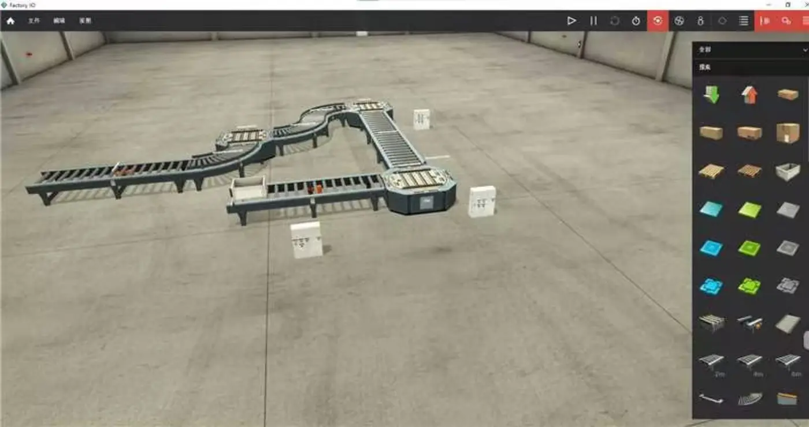
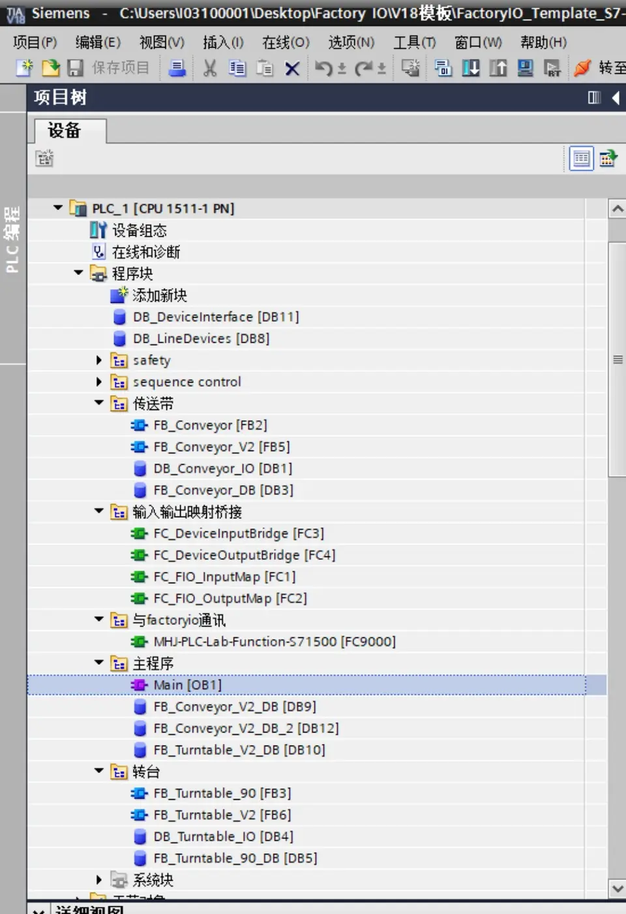
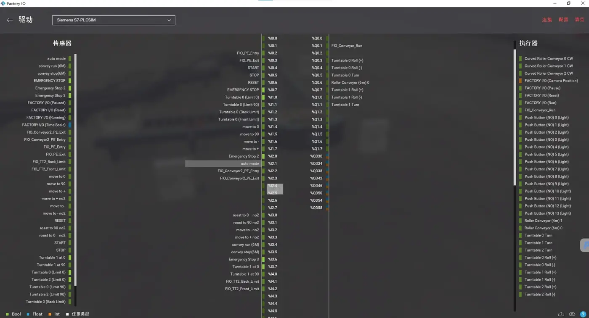

您好，我叫冉建飞，本科毕业于上海第二工业大学智能制造工程专业，目前在上海先惠从事 PLC 相关工作。在现岗位中，我主要使用西门子 TIA Portal 和 S7-1500，参与墨西哥奥迪、天津大众汽车产线项目，工作内容包括基于现有功能块完成节能逻辑、手动控制和传感器调用，以及根据电气图纸核对硬件组态、网络拓扑、现场 I/O，并参与联调和问题排查。此前我在节卡做过机器人硬件测试，在校期间也完成过越疆机械臂、海康视觉和 FANUC 机器人集成项目。这些经历让我逐渐形成了从 PLC、机器人、传感器到设备实际动作的整体视角。杜尔这个岗位吸引我的地方，是它既涉及汽车涂装和总装设备的软件调试，也需要与机械、设计、项目和客户团队协同，完成现场问题处理、模板程序修改、培训和交付。我希望继续深耕西门子控制系统，同时拓展对完整工位和整线的理解。我愿意接受国内及海外项目的长期驻场，也愿意用英语进行日常工作沟通。
01 / INTRODUCTION
中英文自我介绍
围绕 Siemens PLC、汽车产线调试、机器人实践与现场交付方向。
Hello, my name is Jianfei Ran. I graduated from Shanghai Polytechnic University with a bachelor's degree in Intelligent Manufacturing Engineering. I am currently working as a PLC engineer at Shanghai SK Automation, mainly using Siemens TIA Portal and S7-1500. I have supported the Audi Mexico and Volkswagen Tianjin projects. My work includes energy-saving logic, manual functions, sensor function-block calls, hardware configuration checks, network topology checks, I/O verification, commissioning, and troubleshooting. Before that, I worked in robot hardware testing at JAKA. I also completed robotics projects using Dobot, FANUC, and Hikvision vision systems. These experiences have helped me understand the full chain from PLC logic and field signals to robot motion and equipment behavior. I am interested in Dürr because this role combines automotive system commissioning, software modification, cross-functional teamwork, customer support, and final delivery. I am willing to travel for both domestic and overseas projects. I can use English for reading, writing, and simple daily communication, and I am continuing to improve my spoken English.
02 / ROLE ALIGNMENT
与岗位要求直接相连的经历
从 Siemens 控制系统到汽车产线现场，从模板逻辑调用到跨专业联调，能力基础与杜尔电气调试岗位的工作链路相连。
CORE FOUNDATION
Siemens PLC 与汽车产线调试
当前使用 TIA Portal 与 S7-1500，参与汽车产线节能逻辑、手动控制、传感器调用、硬件组态核对、网络拓扑核对、I/O 验证及现场联调排故。
TEMPLATE SOFTWARE
基于现有程序迭代
在奥迪项目既有功能块基础上完成功能调用与逻辑调整，并在大众项目中参与优化和部分独立编写。
SYSTEM VIEW
跨设备联合诊断
接触 PLC、I/O、PROFINET、伺服、拧紧系统与机器人测试，能够从信号、程序和动作结果逐层定位问题。
MOBILITY & ENGLISH
英语与驻场适应
CET-6、C1 驾照；愿意接受国内及海外项目长期驻场，并在项目中持续提升英语口语和客户沟通能力。
03 / EXPERIENCE
现场经历与工程实践
从汽车产线 PLC 到协作机器人测试，再到视觉分拣与机器人集成，持续积累设备全链路视角。
01
2026.02 — 至今
AUTOMOTIVE LINE
上海先惠自动化股份有限公司
PLC 工程师
- 参与奥迪、大众相关产线项目，使用 Siemens TIA Portal 与 S7-1500。
- 完成节能逻辑、手动控制、传感器程序调用及部分功能优化。
- 依据电气图纸核对 PLC 硬件组态、网络拓扑与现场 I/O，并参与联调排故。
- 接触禾川、汇川伺服以及力士乐拧紧系统的应用与控制。
02
2025.10 — 2026.01
ROBOT TEST
节卡机器人
硬件测试工程师
- 执行机器人绝对精度、重复定位精度、耐久与整机状态测试。
- 参与零位标定、Z 向标定、控制柜镜像与版本更新。
- 完成谐波减速器扭转刚度、传动效率等测试并记录分析结果。
03
2025.02 — 2025.05
VISION & ROBOTICS
睿抗机器人开发者大赛
视觉分拣与多轴协同
- 使用 DobotStudio Pro 完成机械臂与地轨的多轴协同控制。
- 通过 TCP 对接海康视觉，完成颜色识别、N 点标定与分类搬运。
- 负责部分 I/O 接线、动作联调与整套任务验证，获全国一等奖。
04
在校项目
ROBOT INTEGRATION
FANUC 机器人集成
轨迹与码垛应用
- 完成 2×4 取料、3×4 码垛任务的点位规划与程序调试。
- 实现直线、圆弧、三角形与矩形等典型轨迹运行。
04 / FEATURED PROJECT
输送线与转台控制仿真
以汽车产线典型输送机构为原型，在 TIA Portal 与 Factory I/O 中验证设备接口、模块复用、顺序控制与分层诊断。
PERSONAL ENGINEERING PRACTICE
用仿真复刻现场机构，练习可复用控制结构
场景包含直线输送带、弯道输送带与转台。程序通过 I/O 映射、统一设备接口和机构功能块组织控制逻辑，使同类设备能够复用调用，并可沿信号层、接口层和设备层逐级监控。
01现场信号Factory I/O 传感器→
02I/O 映射FC Input / Output Map→
03统一接口UDT / Device Interface DB→
04设备控制FB Conveyor / Turntable→
05动作执行Factory I/O 执行器
统一设备接口
为同类机构建立一致的数据结构，让命名、调用与监控保持统一。
封装设备状态
输送带、转台等机构使用 FB 与实例 DB，便于重复调用和状态保持。
集中管理 I/O
把物理地址集中映射到设备接口，减少机构逻辑对现场地址的直接依赖。
分层监控诊断
沿映射层、接口层、设备层逐级监控，快速缩小现场问题范围。
SCENE输送带 · 弯道 · 转台
SIGNALS光电 · 限位 · 模式 · 急停
STRUCTUREUDT · FB · FC · 实例 DB
COMMISSIONING DEMO · CURRENT VERSION
Factory I/O 阶段性联调演示
视频记录了仿真场景运行、TIA Portal 设备块调用与 GRAPH 顺序控制监控。当前版本已经完成输送带、转台与主要控制逻辑的核心联动，并可基本运行；后续继续完善边界条件、异常处理与整体稳定性验证。
00:37H.264 · 720PFACTORY I/O × S7-PLCSIM



05 / CAPABILITIES
面向现场交付的工程能力
围绕控制系统、现场调试、机器人集成、工程沟通和长期驻场形成的能力组合。
PLC 与软件
- Siemens TIA Portal
- S7-1500
- LAD / SCL / GRAPH
- UDT / FB / FC
- 基于模板的逻辑修改
- HMI 基础
电气与现场
- 电气图纸阅读
- PLC 硬件组态
- I/O 点位核对
- PROFINET 网络拓扑
- 联调与故障定位
- 调试记录与文档整理
机器人与集成
- FANUC / Dobot / JAKA
- TCP 通信
- 海康视觉
- N 点标定
- 多轴协同
- 机器人硬件测试
协作与适应
- CET-6
- C1 驾照
- Office 与报告整理
- 跨专业联调协作
- 现场问题快速响应
- 国内 / 海外长期驻场
06 / MOTIVATION
从 PLC 调试走向完整设备交付
希望把现有的汽车产线与 Siemens PLC 基础，带到更完整、更国际化的工程项目中。
理解工位，也理解整线
我希望从 PLC 程序进一步走向整套设备和整线交付。杜尔的岗位把汽车涂装与总装系统、现场软件调试、跨团队问题解决、客户培训和最终验收放在同一条链路上，这与我想形成“既懂控制，也能理解机器人、机械与现场节拍”的能力方向一致。我的起点是 Siemens PLC 和汽车产线现场经验，我希望把这些基础带到更完整、更国际化的项目中。
From PLC logic to complete systems
I want to grow from PLC programming into complete equipment and line commissioning. This role connects automotive systems, on-site software commissioning, cross-functional problem solving, customer support, and final acceptance. That is exactly the direction I want to develop. My current foundation is Siemens PLC and automotive production-line experience. In the future, I would like to understand not only the control program, but also the robots, mechanical functions, process requirements, and the overall performance of the station.
07 / DIRECTION
让程序、设备动作与客户现场
形成可靠的交付闭环
持续深耕 Siemens 控制系统，积累汽车涂装与总装设备调试经验，在跨团队、跨地域项目中成长为能够独立承担现场软件调试与交付任务的工程师。
RJ